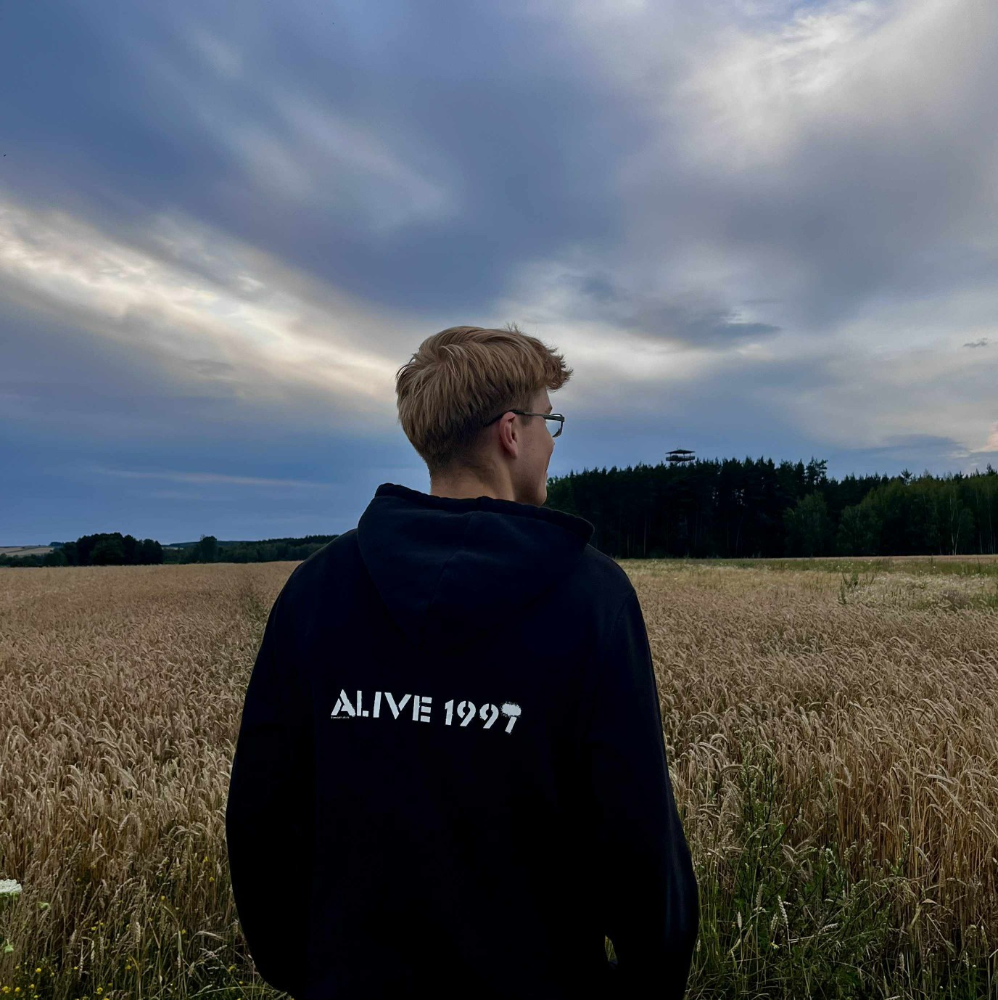

Cześć, nazywam się Paweł Łapiński

O mnie
Mam 20 lat. Interesuję się programowaniem, montowaniem oraz sportem
- Pierwsze kroki w proghramowaniu zacząłęm 4 lata temu. Od tego czasu poznałem: Java, Python oraz HTML
- Od dzieciaka uwielbiam jeździć na rowerze, a przygodę z siłownią rozpocząłęm 2 lata temu
- Montuje głównie własne filmy pod swój kanał na YouTube
Ukończona szkoła: I Liceum Ogólnokształcące im. Adama Mikckiewicza w Łapach